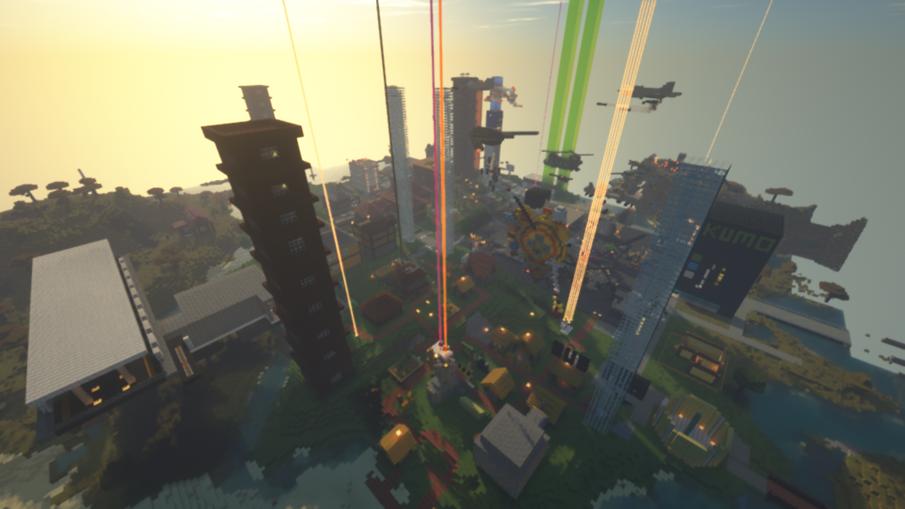
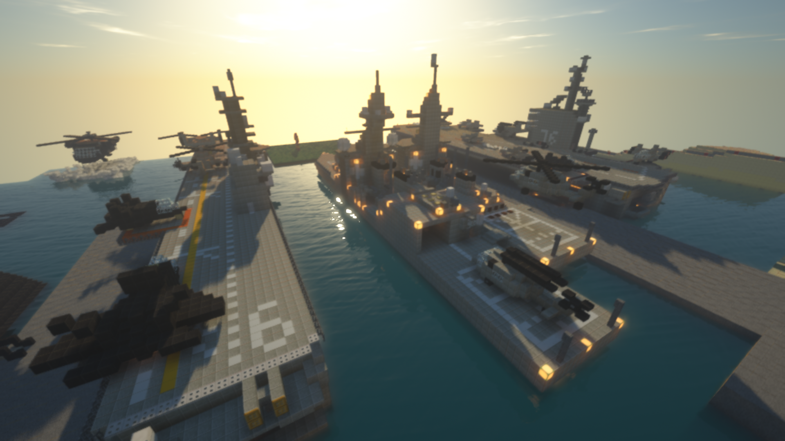
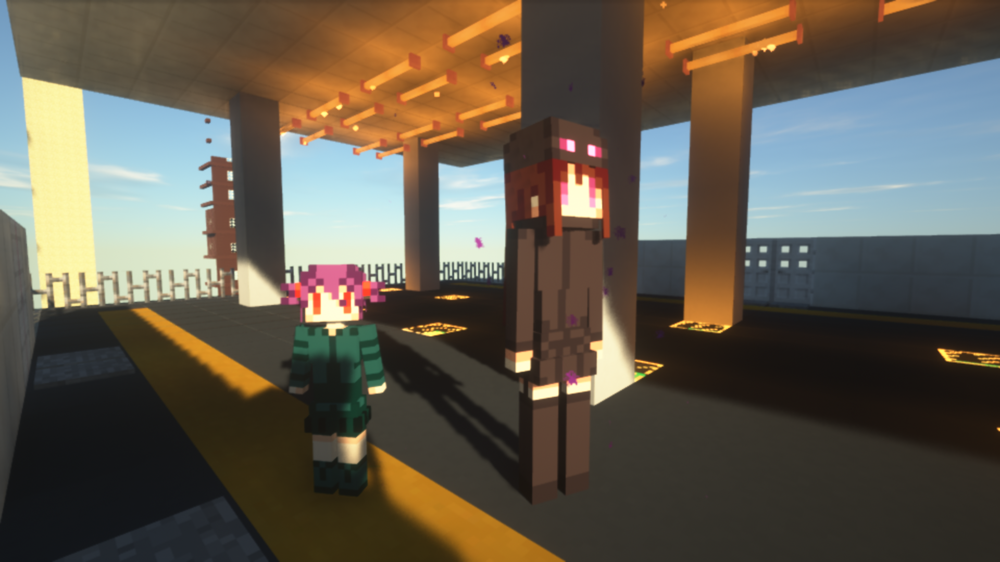
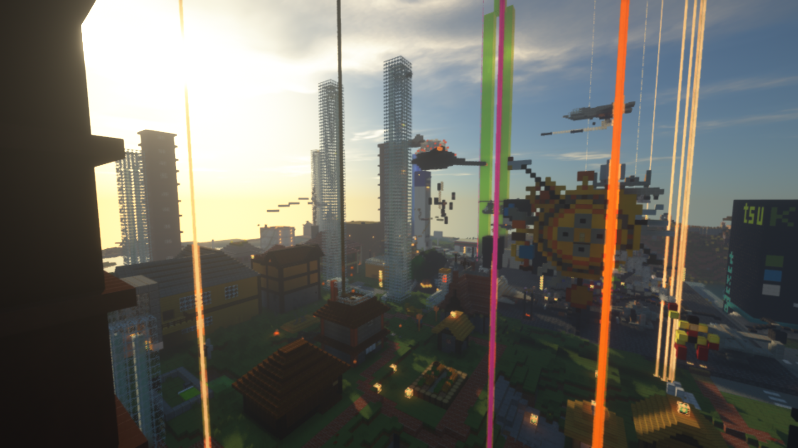
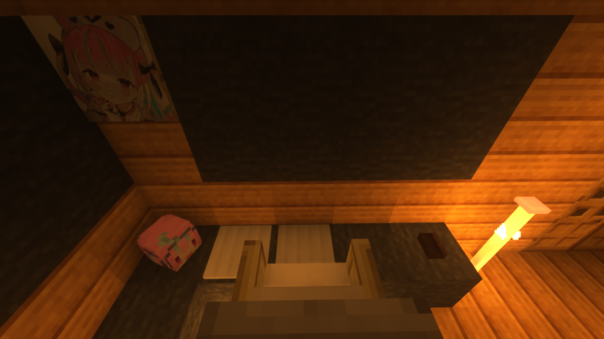
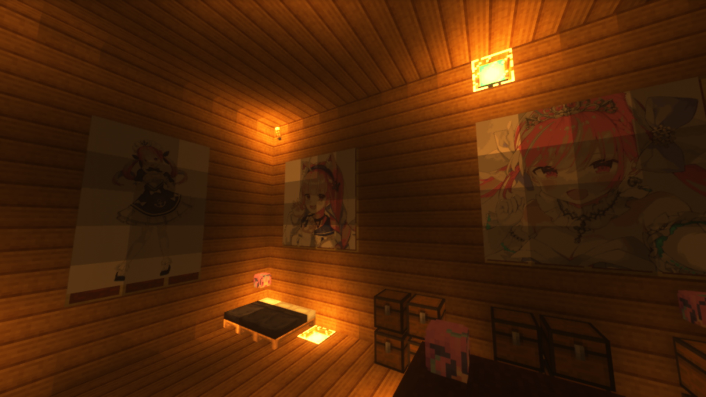
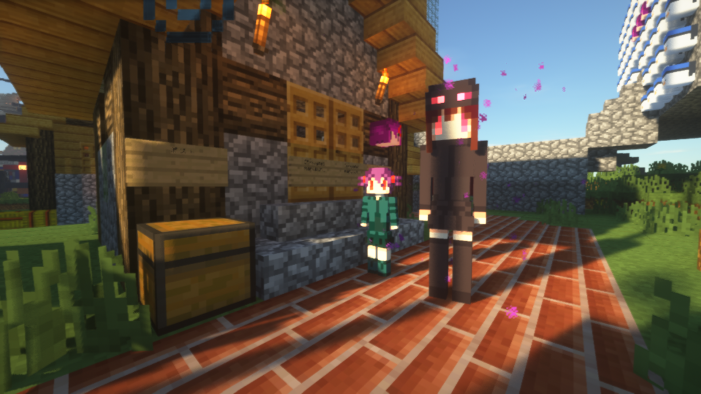

ABOUT
information
status

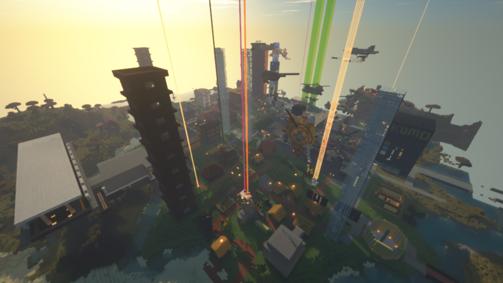
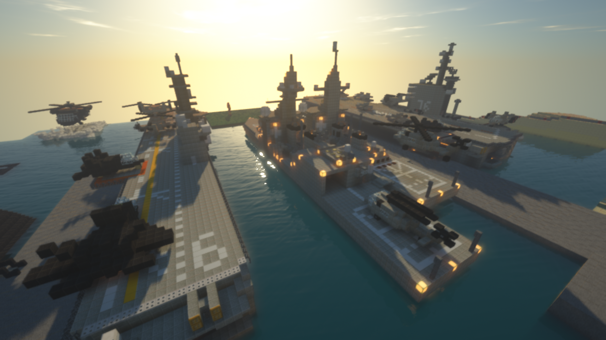
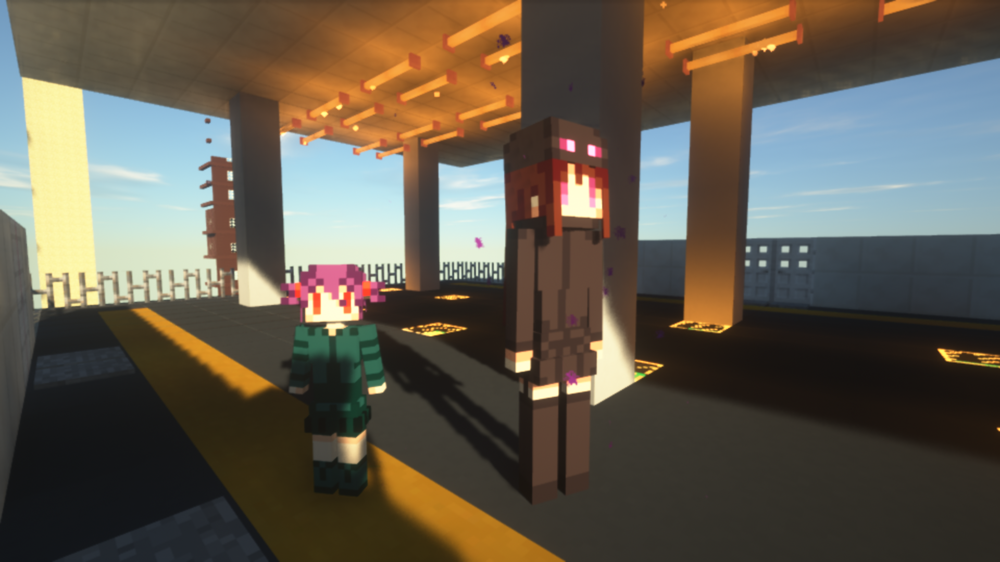
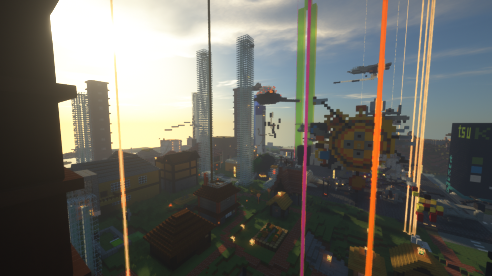
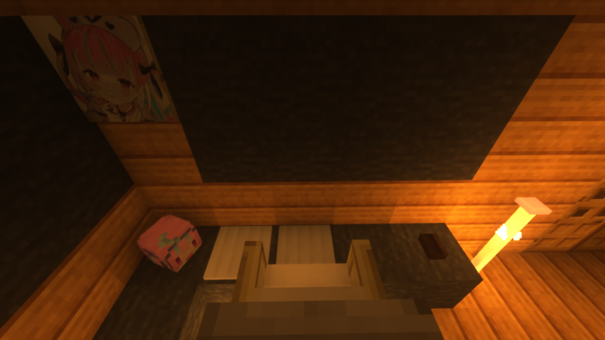
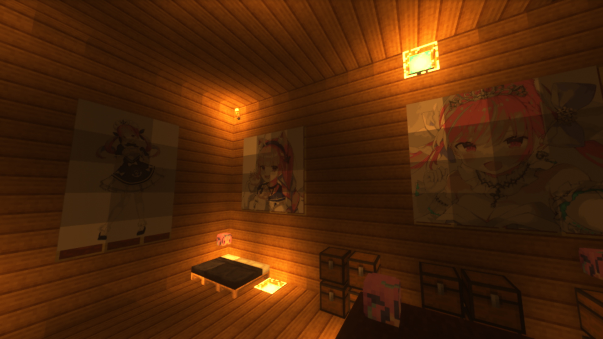
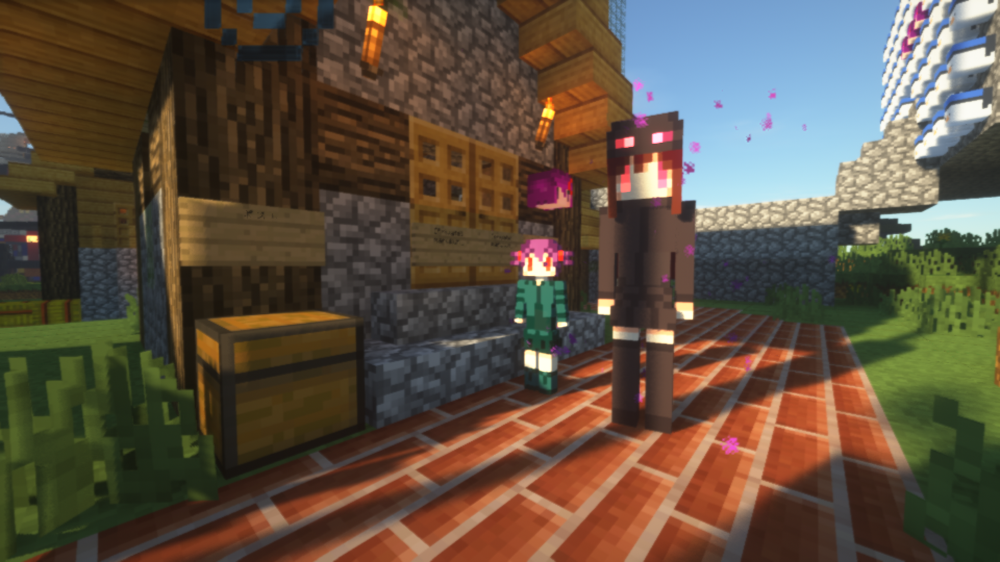

optfineを導入します。

minecraft1.16.5を起動します。
マルチプレイをクリック後→「サーバーを追加」からipアドレスに113.148.41.177を入力します。(サーバー名は任意）
追加したら、接続をクリックします。これで完了！
サーバーに入るとロビーにスポーンします。ロビーには複数のワールドへのゲートがありクリエイティブ、サバイバル、資源ワールド等へのゲートがあります。
ここではメインであるクリエイティブモードについて紹介していきます。


禁止事項
サーバーに負荷をかける事
高速クロック回路の常時使用
かまどの大量設置
mobを大量に敷き詰める
リピートsummonコマンドなどのサーバーに負荷をかけるコマンド
その他負荷がかかっていると主が判断した場合削除をお願いする事が有ります
荒らし、嫌がらせ行為
他人の建築の破壊
banやstop、kickなどのコマンド連続使用（主のみが使います)
その他荒らしと判断した場合は容赦なくbanします。
modの使用は基本的におｋですが、主が不適切と判断した場合は削除をお願いする事が有ります。